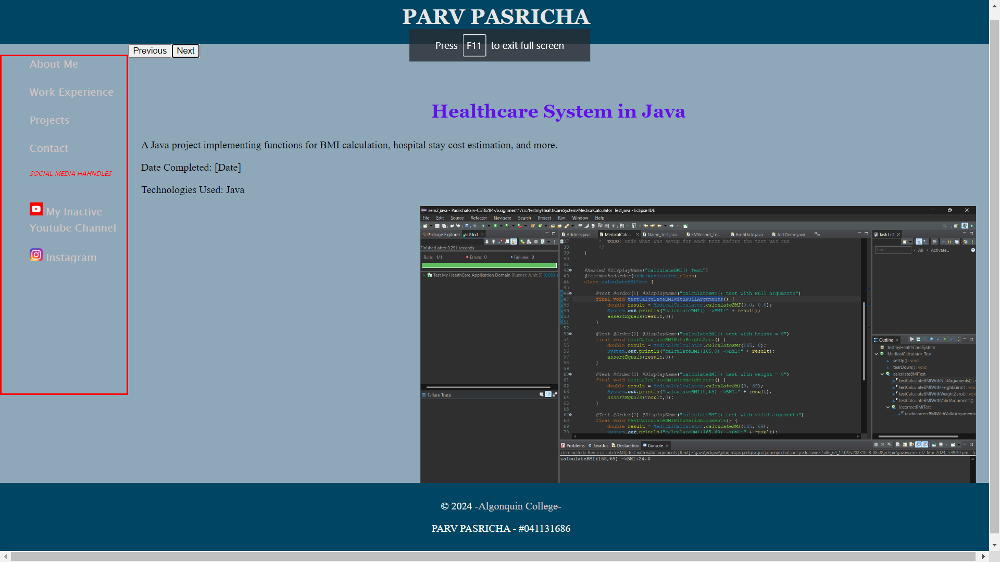
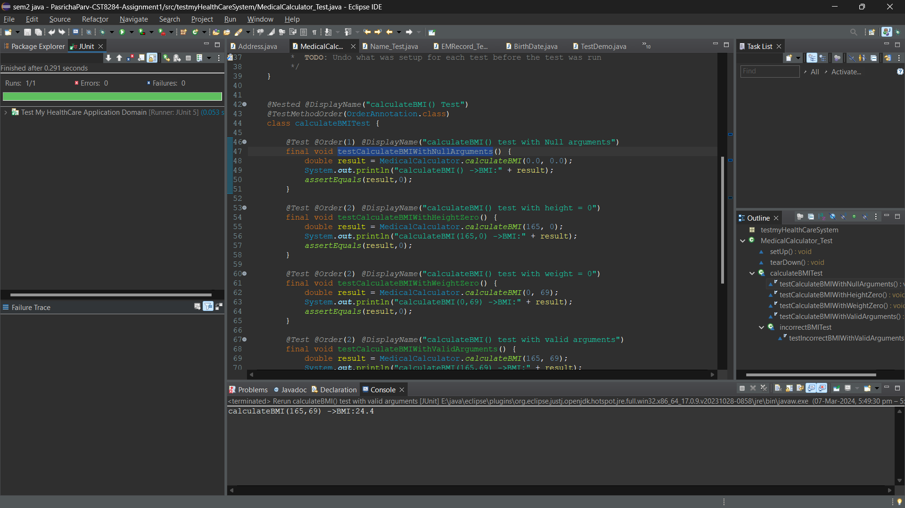
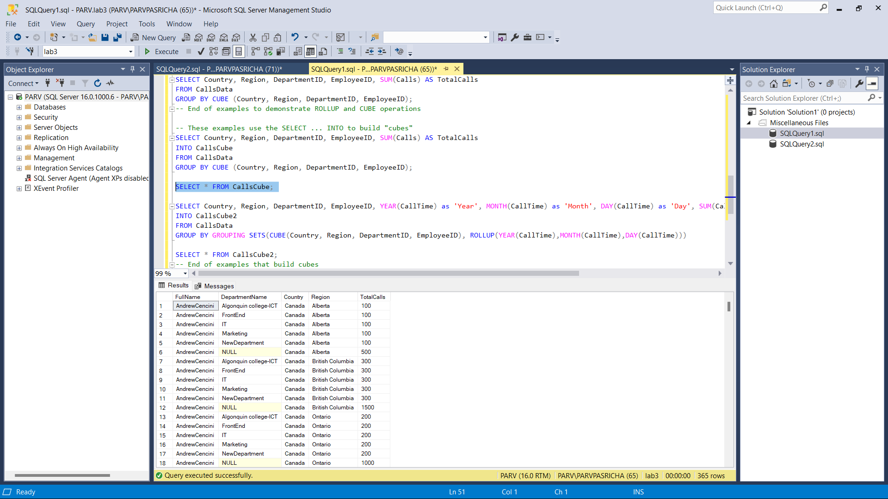

Web Programming Portfolio
A collection of web pages including an About Me, Contact, and Projects page.
Date Completed: 5 March 2024
Technologies Used: HTML, CSS, JavaScript
Healthcare System in Java
A Java project implementing functions for BMI calculation, hospital stay cost estimation, and more.
Date Completed: 1 March 2024
Technologies Used: Java
VR Heritage Proposal
A proposal for a VR experience allowing users to explore historical sites and learn about their history.
Date Completed:{To be completed}

Vinyl Music Records Database
A full-fledged database for managing vinyl music records, allowing users to add, edit, and track their collection.
Date Completed: 24 February 2024
Technologies Used: SQL, Database Management
